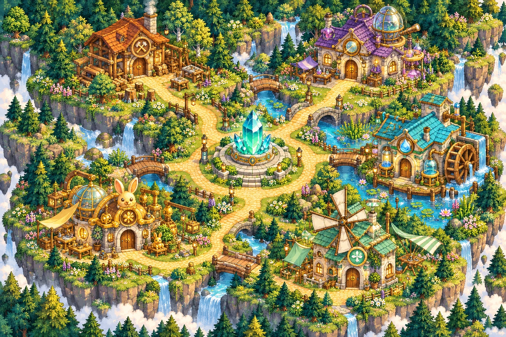

숲속 공방 지도
홈·스테이지 선택
배경 그림; 문·길 좌표는 코드와 대조
생성 프롬프트 보기
Create a polished cozy 2.5D pixel-art RPG island map for a materials-science learning adventure. Landscape 1536 x 1024. Oblique top-down view, consistent crisp pixel scale. Five distinct small science workshops arranged around a central crystal core plaza, each front door clearly visible. Warm winding sand paths connect every doorway to the plaza, with readable bridges over a small stream, lush forest edges, flowers, stones and lamps. Preserve broad clear walking routes and space around doors for DOM name labels. Distinct navy, teal, blue, green and warm copper workshop accents. No text, letters, numbers, labels, interface, people, animals or logos. No perspective camera tilt within the same scene.